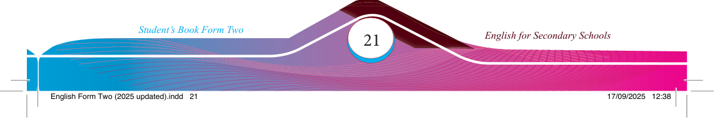

Exercise 2.3


Some villagers pleaded to save their forest, but their pleas were ignored. The forest
was more than just trees; it was a living, breathing entity. However, the loggers
thought it was just a source of wood.
Still, the villagers did not give up. They warned that if deforestation continued, their
life would be ruined. They said soon there would be no trees left. On the other hand,
the loggers argued that the demand for wood was too high to stop.
The villagers explained that the forest needed time to regenerate; otherwise, it would turn into a wasteland, with nothing left for future generations.
Finally, the townspeople began to understand the importance of the forest. They
stopped their logging activities and collaborated with the villagers to plant trees and restore the forest. However, the damage was done, and the forest would take many years to heal.
In the end, the forest was saved. The people learned a lesson about balancing nature
and development. Yet, the scars from deforestation reminded them of what was
almost lost.
Adapted from TIE (2018), English for Secondary Schools- Student’s Book Form Two,
Questions
1. Which words or phrases help to connect the description of the beautiful forest to the problems caused by cutting down trees?
2. What are the roles played by the phrases As a result and Therefore in the story?
3. How do the words Although and In contrast describe different opinions in the story?
Match each cohesive device in Column A with its correct function in Column
B. Write the letter of the correct function in the column next to each cohesive device. Note that items in column B can be used more than once.